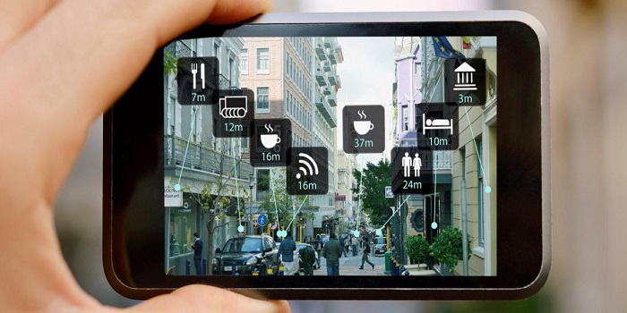
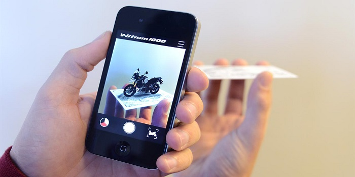
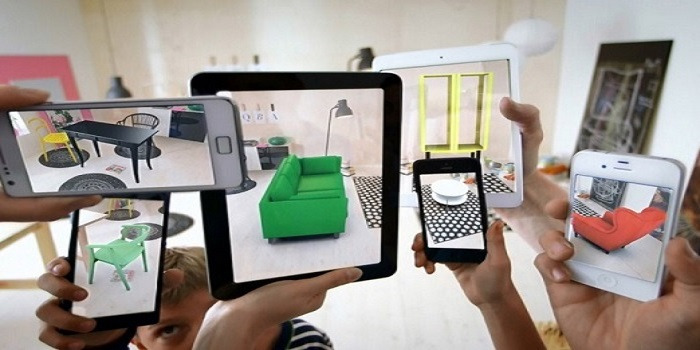

<!DOCTYPE html>
<html></html>
<head>
  <meta http-equiv="Content-Type" content="text/html; charset=ISO-8859-1">
  <meta name="viewport" content="width=device-width">
  <title>Bespoke.js</title>
  <meta content="Bespoke.js" property="og:title">
  <meta content="Bespoke.js" property="og:site_name">
  <meta content="http://markdalgleish.com/projects/bespoke.js/" property="og:url">
  <meta content="website" property="og:type">
  <link rel="stylesheet" type="text/css" href="./Bespoke.js_files/style.css">
  <link rel="stylesheet" type="text/css" href="./Bespoke.js_files/themes.css">
  <link href="./Bespoke.js_files/css" rel="stylesheet" type="text/css">
</head>
<body class="cube">
  <div id="main">
    <header>
      <p class="hidden"><span id="input-method">Tekan arah panah atas dan bawah </span>untuk mengganti mode tampilan. </p>
    </header>
      <div id="title"><a href="katakana.html"><span>Augmented Reality</span></a></div>
    <p id="second">
      <ul>
        <li>a-column </li>
        <li>i-column </li>
        <li>u-column </li>
        <li>e-column </li>
        <li>o-column<span id="dummy"></span>
          <article class="bespoke">
            <section id="mix"><a href="#" onclick="playSound('./sound/a.mp3');" class="satu"><b>Team 2 </b></a>
              <h6><br>Putri Simangunsong</br> (151110661)</h6>
                <h6><br>Novita Marpaung </br>(151110661)</h6>
            </section>
            <section id="mix"><a href="#" ><b>Pengertian</b></a>
                <h6>Augmented Reality (AR) adalah menggabungkan dunia nyata dan virtual, bersifat interaktif secara realtime, dan merupakan animasi 3D.</h6>
            </section>
            <section id="mix">
              <h6>Teknologi AR ini biasanya digunakan dibidang militer, medis, dan game . Contoh yang sering digunakan oleh pengguna adalah Wikitude </h6>
            </section>
            <section id="mix">
            </section>
            <section id="mix"><a href="#" ><b>Metode Augmented Reality </b></a>
              <h6>Metode yang dikembangkan pada Augmented Reality saat ini terbagi menjadi dua metode, yaitu </h6>
            </section>
           <section id="mix">
              <h6>1. Marker Augmented Reality (Marker Based Tracking)<br>Marker biasanya merupakan ilustrasi hitam dan putih persegi dengan batas hitam tebal dan latar belakang putih. Komputer akan mengenali posisi dan orientasi marker dan menciptakan dunia virtual 3D yaitu titik (0,0,0) dan tiga sumbu yaitu X, Y, dan Z. </h6>
               </section>
            <section id="mix">
            </section>
           <section id="mix">
              <h6>2. Markerless Augmented Reality<br>dengan metode ini pengguna tidak perlu lagi menggunakan marker untuk menampilkan elemen-elemen digital.namun aplikasi tetap berjalan dengan melakukan pemindaian terhadap object, namun ruang lingkup yang dipindai lebih luas dibanding dengan marker AR.</h6>
            </section>
            <section id="mix">
            </section>
            <section id="mix"><a href="#" >wkwkwkwk </a>
              <h5>ehehheheheheheheheh</h5>
            </section>
            <section id="mix"><a href="#" >wkwkwkwk </a>
              <h5>ehehheheheheheheheh</h5>
            </section>
            <section id="mix"><a href="#" >wkwkwkwk </a>
              <h5>ehehheheheheheheheh</h5>
            </section>
           <section id="mix"><a href="#" >wkwkwkwk </a>
              <h5>ehehheheheheheheheh</h5>
            </section>
          </article>
        </li>
      </ul>
    </p>
   
  <footer>
    <div class="themes">
      <p><strong>MODE VIEW<span class="colon">:</span></strong><span id="theme">Cube</span></p>
      <div id="up-arrow" class="up arrow">^</div>
      <div id="down-arrow" class="down arrow">^</div>
    </div>
  </footer>
  <script src="./Bespoke.js_files/bespoke.min.js"></script>
  <script src="./Bespoke.js_files/demo.js"></script>
  <script src="./Bespoke.js_files/sound.js"></script>
</body>